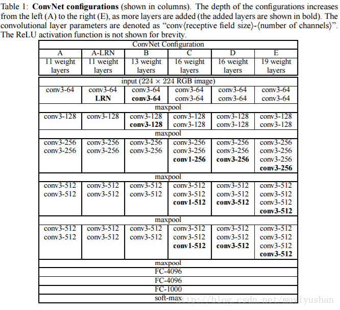

实验提要
刚做完CS20的assignmet 2，因为是第一个tensorflow项目，虽然很多不知道怎么做借鉴了别人的代码，整个代码框架大致是搞懂了，姑且留个记录。
整个实验基本上是对A Neural Algorithm of Artistic Style
这篇文章的一个实现。实验提供了一些框架代码，可以在git上这里找到
原论文以及主要观点
特点
A Neural Algorithm of Artistic Style 这篇文章发表2016，还算比较新的文章。
文章的主要点在于它发现了在CNN当中图片的内容和图片的风格是可以分离的，因而可以独立的处理这些表示生成新的有意义的图片（虽然我也没完全弄懂他的意思），原文如下：
“The key finding of this paper is that the representations of content and style in the Convolutional Neural Network are separable. That is, we can manipulate both representations independently to produce new, perceptually meaningful images.”
VGG-Network 结构
文章使用的实现方法基于VGG-Network，在cs231n的这个课件里有对VGG-Net的简要介绍
VGGNet. The runner-up in ILSVRC 2014 was the network from Karen Simonyan and Andrew Zisserman that became known as the VGGNet. Its main contribution was in showing that the depth of the network is a critical component for good performance. Their final best network contains 16 CONV/FC layers and, appealingly, features an extremely homogeneous architecture that only performs 3x3 convolutions and 2x2 pooling from the beginning to the end. Their pretrained model is available for plug and play use in Caffe. A downside of the VGGNet is that it is more expensive to evaluate and uses a lot more memory and parameters (140M). Most of these parameters are in the first fully connected layer, and it was since found that these FC layers can be removed with no performance downgrade, significantly reducing the number of necessary parameters.
VGGnet的网络参数如图所示

基于VGGnet 的实现
文章使用了VGGNet当中的16层卷积层和5层pooling层,去掉了全连接层，并使用average pooling策略替换max pooling策略
lose function
关于怎么定义loss function,想法比较自然
在图像内容附近通过白噪声初始化一个输出的结果，然后通过网络对这个结果进行风格和内容两方面的约束进行修正。
content loss
设置一个白点噪声的初始图像和原图像输入网络，在某一层的输出$l$处,F和P分别为其特征表述，则取其方差为content loss
$$ L_{content}(\vec p,\vec x, l) = \frac{1}{2}\sum_{i,j}(F_{ij}^{l}-P_{ij}^{l})^2 $$
Gram矩阵
Gram Matrix实际上可看做是feature之间的偏心协方差矩阵（即没有减去均值的协方差矩阵）
协方差矩阵可写成：
$$ \sum = E[(X-E(X))(X-E(X))^T]$$
Gram矩阵可写成
$$ G = A * A^{T} $$
style loss
在CNN每一层反馈的基础上，对每一层的激励结果求其Gram矩阵,同样是对生成图像和原图像，在某一层l生成的两个Gram矩阵G、A
这一层loss贡献为：
$$ E_l = \frac{1}{4N_l^2M_l^2}\sum_{i,j}(G_{ij}^l-A_{ij}^l)^2$$
对每一层的loss进行加权求和，得到总的loss为
$$ L_{style}(\vec a,\vec x) = \sum_{l=0}^Lw_lE_l$$
给定content loss和style loss分别的权重为$\alpha$和$\beta$，总的优化目标为
$$ L_{total}(\vec p,\vec a,\vec x)=\alpha L_{content}(\vec p,\vec x)+\beta L_{style}(\vec a,\vec x)$$
思考
有关于为什么要使用gram matrix来度量风格，当同一个维度上面的值相乘的时候原来越小酒变得更小，原来越大就变得越大，二不同维度上的关系也在相乘的表达当中表示出来,因而gram matrix能有效度量各个维度自己的特性以及各个维度之间的关系
基于tensorflow的实现
代码框架
- utils.py 一些辅助函数
- load_vgg.py 从已经训练好的参数当中加载vggnet
- style_transfer.py 构建风格转化的模型
load_vgg.py
这个模块中的主要任务是搭建vggnet，在load方法当中调用conv2d_relu生成卷积层，调用avgpool生成pooling层
有关conv2d的参数解释见之前笔记和这里
style_transfer
总体分为两部，第一步创建tensorflow图结构，这其中包括：
- 使用create_input创建空白图作为输入
- 加载vggnet结构
- 创建loss
- 根据loss创建optimizer
- 创建统计数据123456def build(self):self.create_input()self.load_vgg()self.losses()self.optimize()self.create_summary()
第二步执行训练:
- 初始化全局变量sess.run(tf.global_variables_initializer())
- 创建FileWriter (用于TensorBoard)
- 创建输入 sess.run(self.input_img.assign(self.initial_img))
- 创建checkpoint检查是否要恢复
- 循环迭代n次
- 最优化opt
- 每特定次循环计算保存summary，保存断点1234567891011121314151617181920212223242526272829303132333435def train(self, n_iters):skip_step = 1with tf.Session() as sess:# 1. initializesess.run(tf.global_variables_initializer())# 2. create writerwriter = tf.summary.FileWriter("graphs/style_transfer", sess.graph)# 3. assign inputsess.run(self.input_img.assign(self.initial_img))# 4. create checkpoint & restore previoussaver = tf.train.Saver()ckpt = tf.train.get_checkpoint_state(os.path.dirname('checkpoints/style_transfer/checkpoint'))if ckpt and ckpt.model_checkpoint_path:saver.restore(sess, ckpt.model_checkpoint_path)initial_step = self.gstep.eval()start_time = time.time()# 5. iterate for n_iters timefor index in range(initial_step, n_iters):if index >= 5 and index < 20:skip_step = 10elif index >= 20:skip_step = 20# 6. run optimizationsess.run(self.opt)# 7. add summary info \ save checkpoint every number of certain layersif (index + 1) % skip_step == 0:gen_image, total_loss, summary = sess.run([self.input_img,self.total_loss,self.summary_op])gen_image = gen_image + self.vgg.mean_pixelswriter.add_summary(summary, global_step=index)#...if (index + 1) % 20 == 0:saver.save (sess, 'checkpoints/style_stranfer/style_transfer', index)
个人在做完之后的一点思考
首先这个任务和传统的学习任务不一样。这次学习的对象是需要生成的图像，待生成的图像像素点作为变量在最优化的时候同时被训练。而网络的模型采用他人训练好的参数。